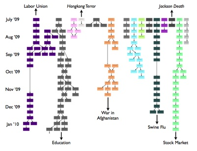

Submitted to WSDM 2011.
Dongwoo Kim (dw.kim@kaist.ac.kr) and Alice Oh (alice.oh@kaist.edu)
The Web is a great resource and archive of news articles for the world. We present a framework, based on probabilistic topic modeling, for uncovering the meaningful structure and trends of important topics and issues hidden within the news archives on the Web. Central in the framework is a topic chain, a temporal organization of similar topics. We experimented with various topic similarity metrics and present our insights on how best to construct topic chains. We discuss how to interpret the topic chains to understand the news corpus by looking at long-term topics, temporary issues, and shifts of focus in the topic chains. We applied our framework to nine months of Korean Web news corpus and present our findings.
Figures (English)English Version Topic Chains (SVG) English Version Topic Chains (EPS) English Version Topic Chains (PDF)(Words are translated by Google translate) Figures (Korean)Korean Version Topic Chains (SVG) Korean Version Topic Chains (EPS) Korean Version Topic Chains (PDF) |  |
{kind=link}
{kind=link}